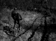
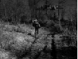
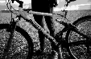
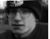
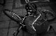
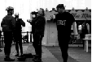

Bike Test pictures. |
|---|
old.cbuzz.co.uk
The trek test was due to take place on the 27th, 28th and 29th of April, I have been promised bikes to test and another date will be announced.
 Dan descending in stanmer, halfway down the slippy descent.
 Dan nearly at the bottom, the test team are just visible at the bottom right of the picture.
 LSD full suspension, lovely.

Picture of me with my BoneIdol hat on, Standing around as per usual.
 Mr Pink doesn't unclip in time at the bottom of a large flight of steps, oh well!
 Jo and Griff's pre tea and cake testing at the meeting place. Attendance compulsory.